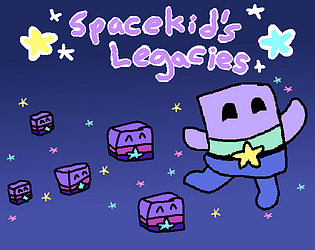

Spacekid's Legacies
Description:
Spacekids Legacies is a game where you play as the titular character Spacekid, who ventures across the galaxy to get to the last planet he hasn't been to yet, Ice Cream Planet. Spacekid can create “Legacies,” platforms that he can use to traverse to places he normally can’t. Get to the portal to get to the next level and reach Ice Cream Planet!
This game was made for the UNC Charlotte Kickoff Game Jam developed over the span of five weeks with my partner here at UNCC. The theme for this game jam was “Legacy,” we were meant to intepret the prompt in any way we liked, as long it was on theme.
Design Process:
Much of this game's design was heavy on platforming and being able to leave a usable platform. A feature I have never designed before was a moving platform; this required reworking my old collision system that was designed to work with still platforms. This resulted in optimizing my collison code and allowing objects to collide with moving objects. Additionally, the largest challenge my partner and I faced was getting this done by the deadline, ensuring that we didn't get held up on certain features, and kept pressing forward.
Outcome:
This experience taught me how a deadline can affect a product's quality but also how it can ensure a finished product as well. Getting priorities in order was a large lesson here, ensuring that we don't get stuck on new features and moving onto the other essential parts to achieve a completed product on time. Next time we participate in an event like this, we will ensure that we declare our game finished at an earlier time so that we can correct any bugs that may be in the game, as this game had a couple of game-breaking bugs. This was an incredibly fun project to work on and taught me and my partner how well we can work together and how to better forward with future projects.